“分数的意义”教学设计 [1]
教学内容：义务教育五年制小学数学第八册第152～154页的部分内容及相应的习题。
教学目的：1.在初步认识分数的基础上，加深对分数意义的理解，并理解单位“1”的含义。
2.理解分母、分子的含义，掌握分数单位。
3.培养学生分析、综合、抽象、概括能力。
4.通过分数的引进，向学生渗透理论来源于实践的观点。
教学重点：单位“1”和分数的意义。
教学难点：对单位“1”含义的理解。
教具：米尺、投影仪、幻灯片、磁性黑板等。
学具：直尺。
教学过程
一、师生谈话、活动，引入新课
1.教师了解班级人数、男生人数、女生人数，某小组男生人数、女生人数、全组人数。板书：人数（建立师生情感，并为学习单位“1”打下基础）。
2.让两名同学用米尺量黑板的长度，量了几次还剩下一段不够1米，说明黑板的长度不是整数。
3.教师把一份礼物平均分给量黑板长度的两位同学，每人分得的礼物也不能用整数来表示。
4.同学们分组测量数学课本的长、宽各是多少厘米，说明长、宽都不是整数。
小结：诸如这样的实例在实际生产和生活中是很多的，当测量和计算的结果得不到整数时，这就需要用一种新的数——分数来表示。那么，什么叫分数呢？这就是这节课我们学习的内容（板书：分数的意义）。
二、进行新课
（一）看图，认识几分之一，几分之几，初步理解单位“1”。
1.观察152页三幅图（如下），请同学们说出每幅图的图意。
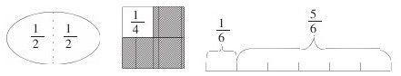
2.改变第三幅图，加个“米”字，说出改变之后这幅图的图意。
3.比较几个分数的相同点及不同点。
相同点：平均分。
板书：平均分。
不同点：分的份数不同（若干份）。
板书：若干份。
4.小结：像图中的一块饼、一个正方形都可以称作一个物体，（板书：一个物体）、一条线段、一个计量单位都可以称作一个计量单位（板书：一个计量单位）。像这样的一个物体、一个计量单位都可以看成就一个单位，在数学中称为单位“1”。（板书：单位“1”）把单位“1”平均分成若干份，取其中的一份就用几分之一来表示（板书：几分之一），取其中的几份，就用几分之几来表示（板书：几分之几）。
（二）进一步理解单位“1”，学习分数的意义。
1.进一步理解单位“1”的含义。
单位“1”是不是只可以表示一个物体，一个计量单位呢？
（1）出示153页苹果图（如下图）演示提问。
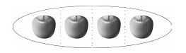
这是一些苹果，一共有几个？把4个苹果组成一个整体，把这个整体看作单位“1”，把它平均分成4份，每份用分数表示是几分之几？这里的
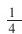
指谁的？这个整体的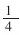
是几个苹果？这里的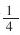
表示什么意思？2个苹果是这个整体的几分之几？这个整体的34是几个苹果？从这可以得出，把一些物体组成的整体看作单位“1”，把它平均分成若干份，其中的一份或几份也可以用分数来表示。
（2）出示153页熊猫玩具图（如右图）
这幅图是把什么看作单位“1”？
它平均分成了几份？每份是几个熊猫玩具？
每份2个熊猫玩具是这个整体的几分之几？
4个熊猫玩具是这个整体的几分之几？这两幅图都是把什么看作单位“1”？
（3）小结：单位“1”不但可以表示一个物体，一个计量单位，而且还可以表示一些物体组成的一个整体（板书：一些物体组成的整体）。因此，单位“1”不同于自然数1，要加引号，也就是说，这个“1”不仅仅表示1个还可以表示一些。例如：4个苹果可以看作单位“1”，6个熊猫玩具可以看作单位“1”，再如一个班学生、一个学习小组、一项工程、一个商店里的所有电视机……都可以看作单位“1”。谁还可以举出一些单位“1”的事例呢？
由此可见，单位“1”，所表示的数量可以大也可以小。
2.概括分数的意义
（1）根据板书的思路概括。
（2）反馈练习，加深对分数意义的理解。
完成154页做一做中的第1题，练习三十五中的第1、3题。
（三）理解分母、分子的含义，掌握分数单位。
1.理解分母、分子的含义。
谁能说说35的含义？回顾分数的各部分名称是什么？
看什么能知道把单位“1”平均分成了多少份？看什么能知道表示这样的多少份？
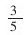
的分母5、分子3各表示什么意思？小结：在分数中，表示把单位“1”平均分成多少份的数，叫做分数的分母，表示取了多少份的数，叫做分数的分子。（板书：分母、分子）
2.分数单位的意义。
今天我们学习的是分数，以前学过整数和小数。它们都是数。整数、小数有计数单位，那么分数单位是什么呢？
观察这些分数，像这样的把单位“1”平均分成若干份，其中的一份叫做分数单位.（板书：分数单位）
如：
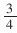
的分数单位是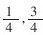
里面有3个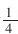
这样的分数单位。问：
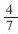
的分数单位是多少？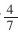
里面有几个这样的分数单位？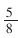
呢？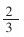
呢？这几个分数的分母不同，它们的分数单位是否相同？小结：分数的分母不同，分数单位就不相同。分母是几，它的分数单位就是几分之一，分子是几，它就有这样的几个分数单位，所有的分数都是由一个或几个分数单位组成的。
三、巩固练习
1.口答：
（1）把一根绳子平均截成4段，每段是这根绳子的几分之几？把什么看作单位“1”？
（2）把15支铅笔平均分成5份，每份是这些铅笔的几分之几？把什么看作单位“1”？
（3）把一个班的学生平均分成6个小组，每个小组是它的几分之几？把什么看作单位“1”？
2.填空：
把全班学生平均分成6组，一个组的人数是全班人数的
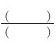
，两个组的人数是全班人数的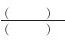
。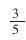
读作五分之三，表示有（）个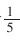
；读作（），表示有（）个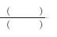
。3.判断正误：
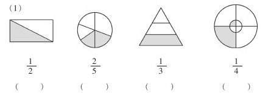
（2）把单位“1”分成若干份，表示这样的一份或者几份的数，叫做分数。（）
（3）分母不同的分数，分数单位不相同。（）
4.深化练习：
（1）用分数表示图中不同颜色的部分
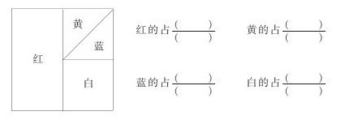
（2）在磁性黑板上贴12个三角形，老师提出问题：
把12个三角形看成单位“1”，把它平均分，怎样分？每份是单位“1”的几分之几？
四、课堂小结
今天我们学习的是分数的意义，明确了把单位“1”平均分成若干份，表示这样一份或几份的数叫做分数。同时也理解了单位“1”、分母、分子、分数单位的含义。对这些内容还有哪些疑问的地方，请同学们看看书，我们再共同讨论。
板书设计：
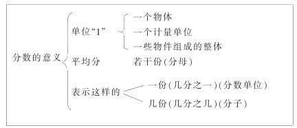